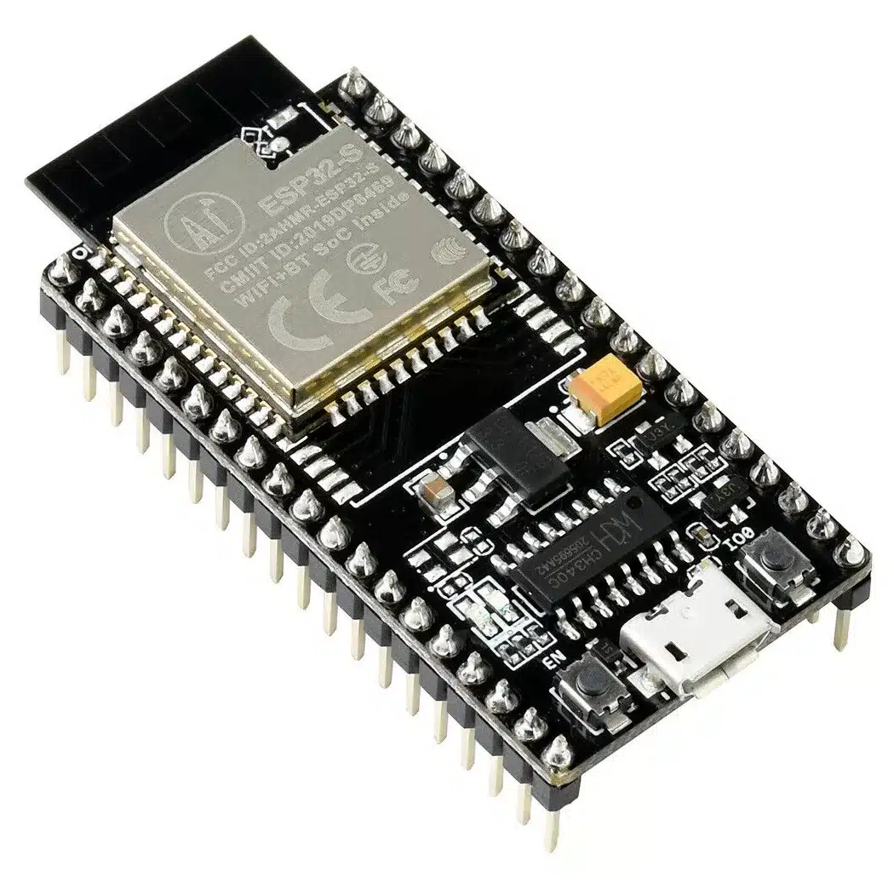
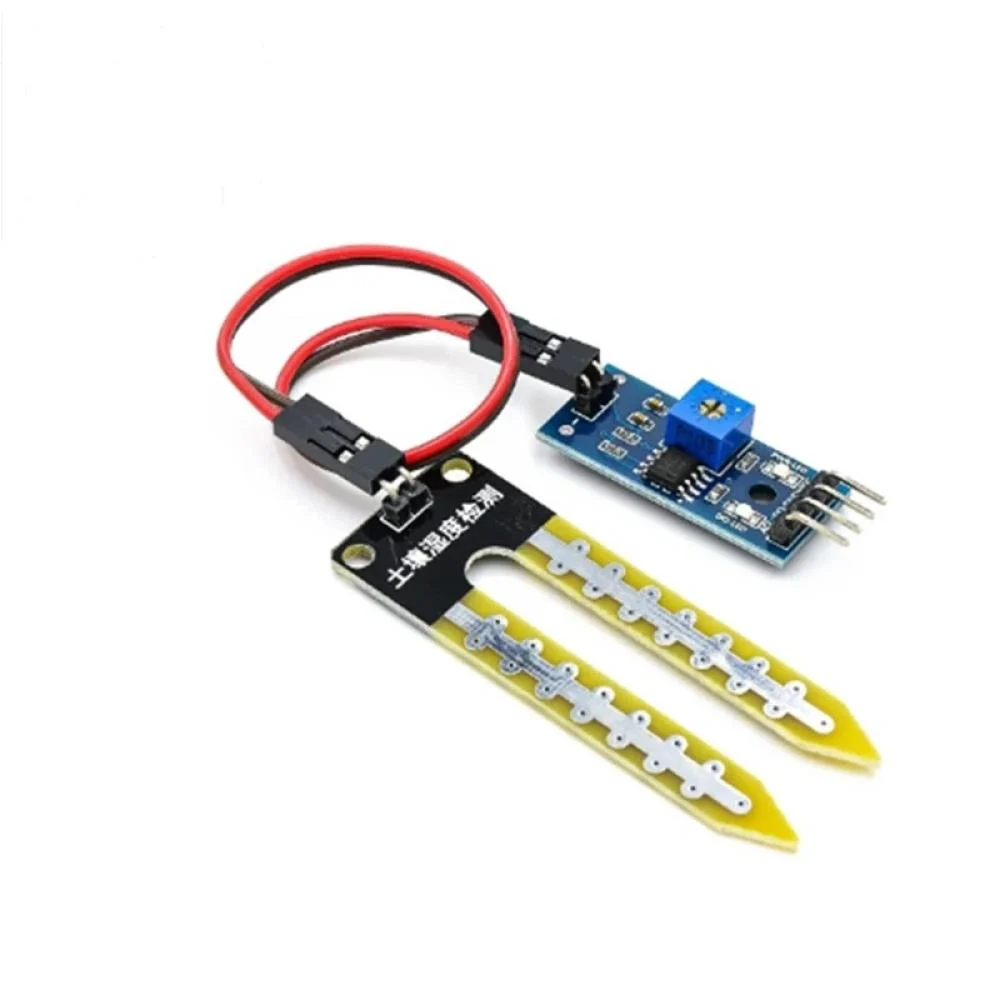
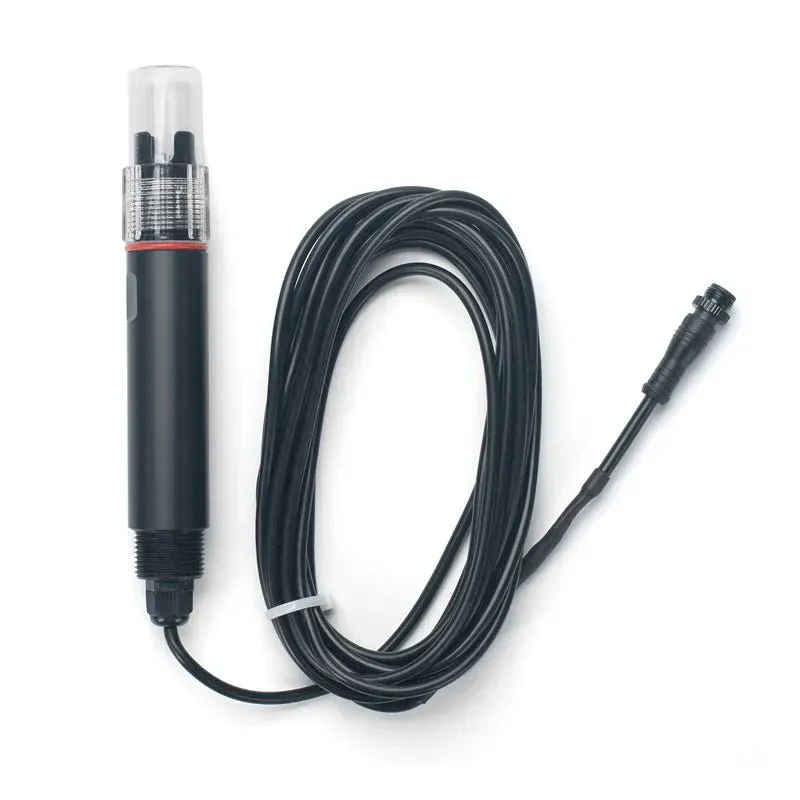
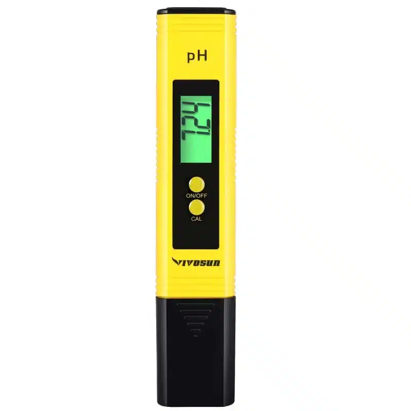
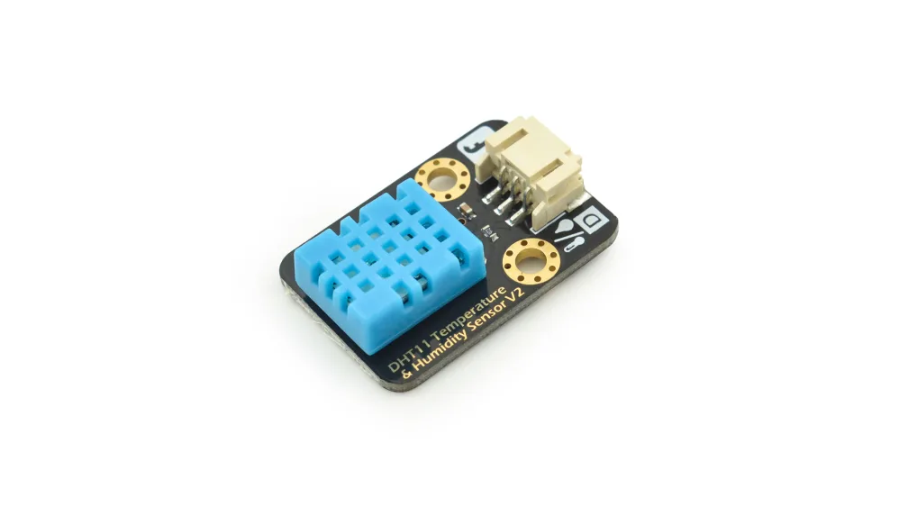
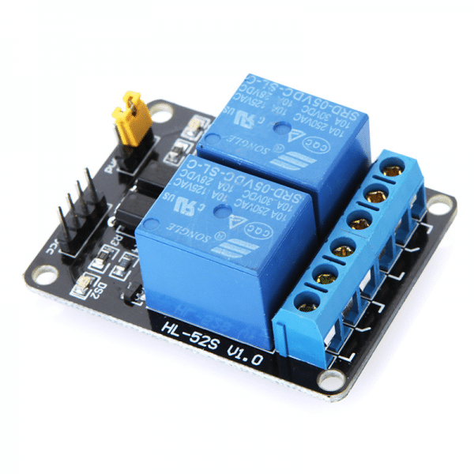

نحو زراعة ذكية
في وادي عربة
الأردن
وادي عربة أرضٌ خصبة الإمكانات لكنها قاسية الظروف — حرارة شديدة، تربة رملية، ومياه جوفية شحيحة. هذا النظام يجمع بين الاستشعار الكيميائي الدقيق وتقنيات إنترنت الأشياء ليحوّل هذه التحديات إلى فرص زراعية حقيقية.
📍 وادي عربة — جنوب الأردن
يمتد وادي عربة على مسافة 160 كيلومتراً جنوب البحر الميت حتى خليج العقبة. رغم موقعه الجغرافي الفريد وتربته الغنية بالمعادن، يعاني المزارعون من شُحّ المياه والحرارة المرتفعة التي تجعل الزراعة التقليدية مُكلفة ومُضرّة بالمياه الجوفية.
خط عرض 29–30° شمالاً · منطقة جافةلماذا تعاني الزراعة في وادي عربة؟
منطقة غنية بالإمكانات لكنها تواجه ثلاثة تحديات متشابكة تستنزف المزارع وتهدر المياه.
التربة الرملية في وادي عربة سريعة التصريف — تفقد الماء قبل أن تمتصه الجذور. وتحت حرارة الصيف الحارقة التي تتجاوز 45 درجة مئوية، يتبخر الماء من سطح التربة بسرعة مضاعفة، مما يجبر المزارع على الري بكميات ضخمة تجاوز حاجة النبات الفعلية أضعافاً.
المشكلة الأعمق هي تراكم الأملاح (EC) في التربة نتيجة التبخر المستمر. هذه الأملاح تحيط بجذور النبات وتمنعها من امتصاص الماء رغم وجوده — وهو ما يسمى علمياً "الجفاف الفسيولوجي". النبات يرى الماء لكن لا يستطيع شربه.
"المزارع في وادي عربة لا يُضيّع الماء عن إهمال، بل لأنه لا يملك أداةً تخبره متى يسقي ومتى يتوقف."
— الهدف الجوهري لنظام AgriSmartيضاف إلى ذلك أن مياه الري في المنطقة تحمل معادن وأملاحاً طبيعية، وبمرور الوقت تتراكم في التربة وتُغيّر من حموضتها (pH) بما يمنع امتصاص العناصر الغذائية الضرورية حتى لو كانت الأسمدة موجودة.
الحرارة الشديدة والتبخر المرتفع
درجات حرارة تتخطى 40°C صيفاً تُسرّع تبخر الماء من التربة وتضاعف احتياج النبات للري، مما يزيد ضغطاً على المياه الجوفية النادرة.
معدل تبخر: 2,800 mm/سنةتملّح التربة (ظاهرة EC المرتفع)
تراكم الأملاح في التربة الرملية يُفضي للجفاف الفسيولوجي؛ النبات يموت عطشاً رغم وجود الماء لأن الأملاح تسحبه منه عكسياً.
EC خطر: فوق 2.5 mS/cmالتربة الرملية وسرعة فقدان الماء
مسامية التربة العالية تجعل الماء يتسرب عمقاً بعيداً عن منطقة الجذور، فيُهدر دون فائدة ويُغرق الأسمدة معه في أعماق التربة.
رطوبة أمان: فوق 35%اضطراب حموضة التربة (pH)
المياه المعدنية وتراكم الأسمدة تُغيّر pH التربة. خارج نطاق 6.0–7.0 يُصبح الحديد والزنك والبور غير متاحة للجذور رغم وجودها.
النطاق المثالي: 6.0 – 7.0كيف يحلّ AgriSmart مشاكل وادي عربة؟
النظام لا يُخمّن — يقيس، يحلّل، ويقرر. كل قرار مبني على بيانات حقيقية من قلب التربة.
القياس الدقيق بدل التخمين
بدلاً من جداول ري ثابتة تتجاهل حالة التربة الفعلية، يضع النظام حساسات مباشرة في منطقة الجذور لتقرأ ثلاثة معطيات في آنٍ واحد: رطوبة التربة لمعرفة هل النبات عطشان، والموصلية الكهربائية (EC) لرصد تراكم الأملاح، وحموضة التربة (pH) للتأكد من قدرة الجذور على الامتصاص.
هذه البيانات تُرفع كل دقيقتين عبر WiFi إلى السحابة، حيث يمكن للمزارع مراقبة مزرعته من هاتفه في أي مكان — ويتدخل النظام تلقائياً حين يتجاوز أي معيار حدّه الآمن.
🌱 الحساسات تقرأ التربة
قراءة مستمرة للرطوبة وEC وpH مباشرةً في منطقة الجذور كل دقيقتين على مدار الساعة.
🧠 ESP32 يحلّل البيانات
الميكروكنترولر يقارن القراءات بالقيم الآمنة المُبرمجة مسبقاً لكل محصول في كل موسم.
📡 الإرسال للسحابة (IoT)
البيانات ترتفع لوحة التحكم عبر WiFi. المزارع يرى حالة مزرعته من هاتفه في أي لحظة.
⚡ القرار التلقائي
عند تجاوز حدٍّ حرج، تُفعَّل المضخة أو الصمام تلقائياً دون تدخل بشري — بالكمية المطلوبة فقط.
💧 الري والتسميد الدقيق
صمامات التسميد بالري (Fertigation) تُضخّ الكمية المحسوبة من الماء والسماد — لا زيادة ولا نقص.
منطق النظام — متى يتحرك وكيف؟
النظام يعمل بمعايير علمية دقيقة مُبرمجة مسبقاً، مع مراعاة ظروف وادي عربة تحديداً.
💧 قرار الري — متى تُشغَّل المضخة؟
رطوبة < 35%حين تهبط رطوبة التربة عن 35% في منطقة الجذور، يُصدر النظام أمر تشغيل فوري للمضخة. يتوقف الري تلقائياً حين تصل الرطوبة لـ 70% — بما يحاكي السعة الحقلية المثالية لتربة وادي عربة الرملية دون هدر قطرة واحدة.
🧂 مكافحة التملّح — غسيل الأملاح
EC > 2.0 mSارتفاع EC فوق 2.0 mS/cm يعني بداية تراكم الأملاح الخطرة. يُطلق النظام تنبيهاً فورياً وينفّذ دورة "غسيل" بضخ كمية إضافية من الماء لتخفيف الأملاح وإعادة EC لنطاق 1.2–1.8 — ثم يعود للري الاعتيادي.
🧪 تصحيح الحموضة — pH Balance
pH: 6.0 – 7.0النظام يراقب pH التربة باستمرار. إذا انخفض عن 6.0 (حموضة زائدة) يُضاف محلول قلوي عبر صمام Fertigation. إذا ارتفع فوق 7.0 (قلوية زائدة) يُضاف محلول حمضي. بذلك تبقى التربة في نطاق الامتصاص الأمثل للنيتروجين والفوسفور والبوتاسيوم (NPK).
🌿 الري التسميدي — Fertigation
جدول ذكيدمج الأسمدة مع ماء الري (Fertigation) بنسب مُحسوبة تمنع الفاقد في التربة الرملية. النظام يُضخّ الأسمدة فقط حين يكون pH مناسباً وEC في النطاق الآمن — لأن السماد في تربة مالحة أو غير مناسبة pH يُضيَّع تماماً.
🎯 الأثر على وادي عربة
- توفير ما يزيد عن 50% من المياه الجوفية المُستنزَفة يومياً في المنطقة
- القضاء على ظاهرة الجفاف الفسيولوجي الناتجة عن تملّح التربة
- رفع كفاءة الأسمدة بأكثر من 40% لأنها تُضخّ في الوقت المناسب
- حماية الكائنات الدقيقة النافعة في التربة من الري الزائد
- تمكين المزارع من مراقبة عشرات الدونمات من هاتفه
- تقليل تكلفة العمالة اليدوية في ظروف الحرارة القاسية
🌿 لماذا وادي عربة تحديداً؟
وادي عربة من أكثر المناطق الأردنية إنتاجاً في الشتاء — لكن ضغط الحرارة الصيفية وشُح المياه يجعل الاستمرارية الزراعية مهددة. تطبيق النظام الذكي هنا لا يُحسّن الزراعة فحسب، بل يحمي الهوية الزراعية لمنطقة تُطعم الأردن وتُصدّر لأوروبا.
الأشكال الواقعية للمكونات المستخدمة
صور حقيقية للحساسات والقطع الإلكترونية التي تم استخدامها في بناء النظام الزراعي الذكي.






فيديو توضيحي
عرض مرئي لعمل النظام الزراعي الذكي وقراءة الحساسات على أرض الواقع.
شكراً لوقتكم الكريم 🌿
وصلنا لنهاية العرض — يسعدني الإجابة على أي سؤال ببالكم حول التحديات والحلول وتطبيق النظام في وادي عربة.
↑ العودة للبداية